Solução de Inteligência Artificial e Automação desenvolvida como projeto integrador para triagem, classificação e roteamento automático de mensagens de clientes.
categoria, prioridade, setor_destino e resumo_curto).Financeiro, Suporte Técnico ou Comercial).──▶ [1. Webhook (POST)]
──▶ [2. HTTP Request (FastAPI + Gemini)]
──▶ [3. Switch (Setor)]
──┬──▶ [4A. Set - Financeiro]
├──▶ [4B. Set - Suporte Técnico]
└──▶ [4C. Set - Comercial]
Recepção (API FastAPI): O endpoint POST /classificar recebe um payload JSON contendo cliente e mensagem, valida os tipos de entrada com Pydantic e injeta os dados em um prompt com regras estritas de classificação.
Processamento com IA: O modelo gemini-2.5-flash analisa o contexto da mensagem com baixa temperatura (0.1) e retorna um objeto JSON garantido pelo schema ClassificacaoSaida.
Execução da Automação (n8n): O fluxo escuta chamadas externas no Webhook /atendimento, consulta a API local (http://localhost:8000/classificar), avalia o campo setor_destino no node Switch e registra o encaminhamento na fila do setor específico.
O workflow está descrito em fluxo_n8n.json. A sequência é Postman → Webhook do n8n → API FastAPI/Gemini → Switch → Set do setor. O Postman chama o Webhook do n8n; é o node HTTP Request que, em seguida, chama a API de classificação.
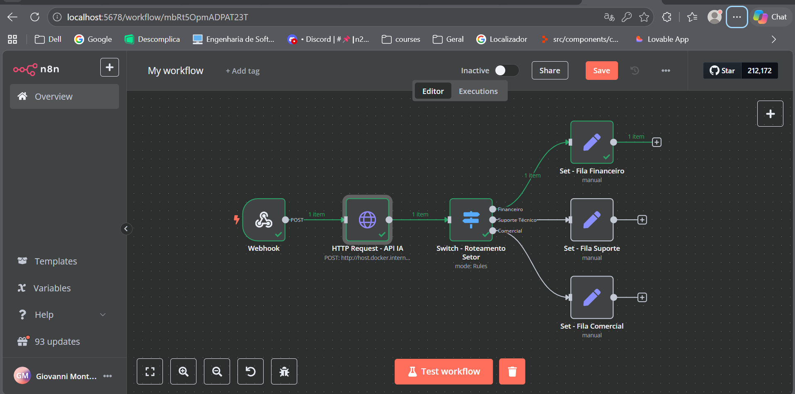
No Postman, use o método POST e a URL do Webhook de teste:
http://localhost:5678/webhook-test/atendimento
O caminho /webhook-test/ é usado enquanto o workflow está aguardando uma execução de teste no editor do n8n. Para um workflow ativo, usa-se a URL de produção /webhook/atendimento. Envie o corpo como JSON, com Content-Type: application/json e os campos esperados pelo endpoint:
{
"cliente": "João Silva",
"mensagem": "Minha fatura veio cobrando o dobro esse mês, preciso de estorno urgente!"
}
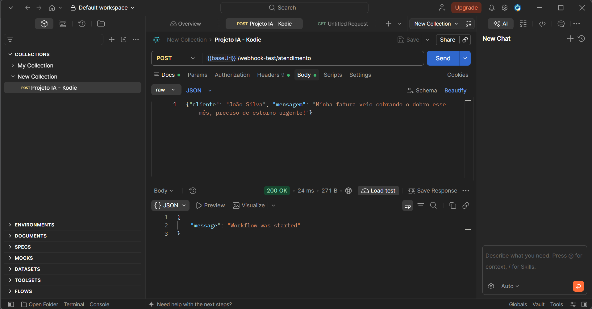
O node Webhook (n8n-nodes-base.webhook) é o gatilho de entrada. Ele recebe o POST no path atendimento e disponibiliza o corpo recebido em $json.body; por isso, os campos são lidos como $json.body.cliente e $json.body.mensagem. A porta 5678 pertence ao n8n, não à API FastAPI.
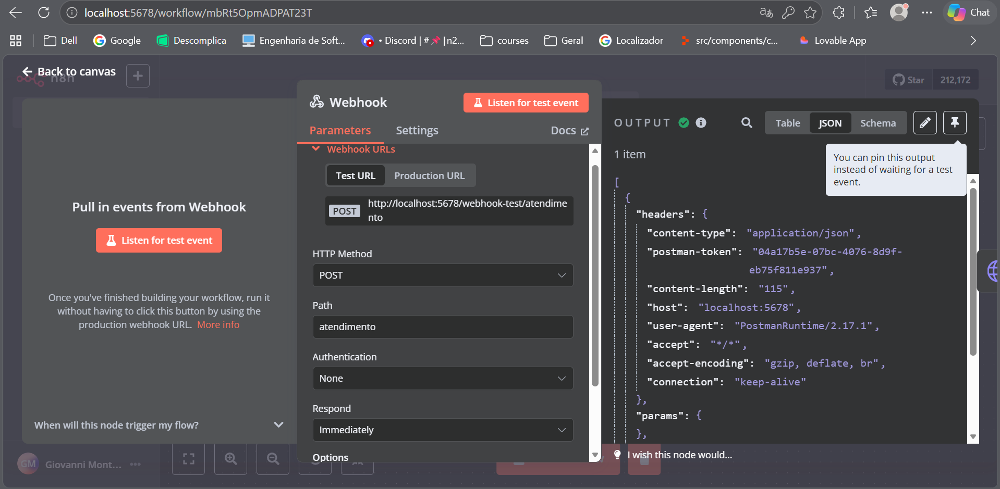
O node HTTP Request - API IA (n8n-nodes-base.httpRequest) envia uma segunda requisição POST, agora para o endpoint FastAPI /classificar. Como o n8n está em Docker e a API está acessível no host, a URL prevista na configuração é:
http://host.docker.internal:8000/classificar
O node envia um corpo JSON usando os valores do Webhook:
{
"cliente": "{{ $json.body.cliente }}",
"mensagem": "{{ $json.body.mensagem }}"
}
A API valida a entrada com MensagemEntrada, monta o prompt e solicita ao Gemini uma classificação estruturada. A resposta contém categoria, prioridade, setor_destino e resumo_curto; esses dados são então entregues ao Switch. Observação: no arquivo JSON do workflow, o valor do campo url está atualmente escrito com sintaxe de link Markdown, em vez de uma URL literal. Para executar o workflow importado, esse campo precisa conter apenas a URL acima.
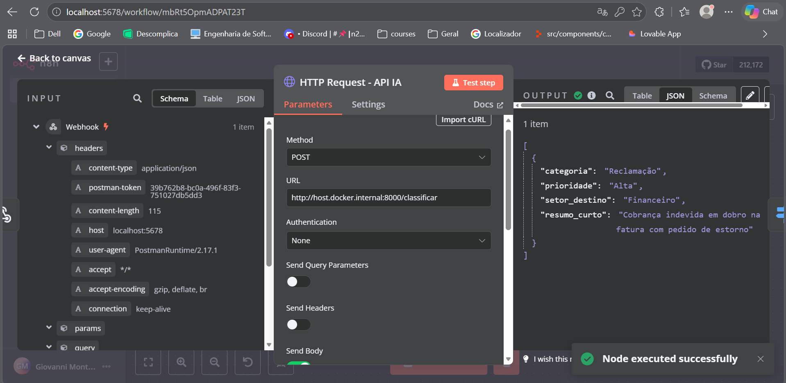
O node Switch - Roteamento Setor (n8n-nodes-base.switch) avalia $json.setor_destino e compara o resultado com Financeiro, Suporte Técnico e Comercial. O item segue pela saída correspondente ao valor recebido. Esse roteamento escolhe um ramo dentro do workflow; não envia, por si só, uma mensagem a uma fila ou sistema externo.
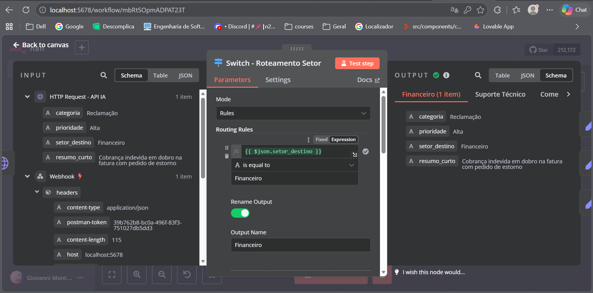
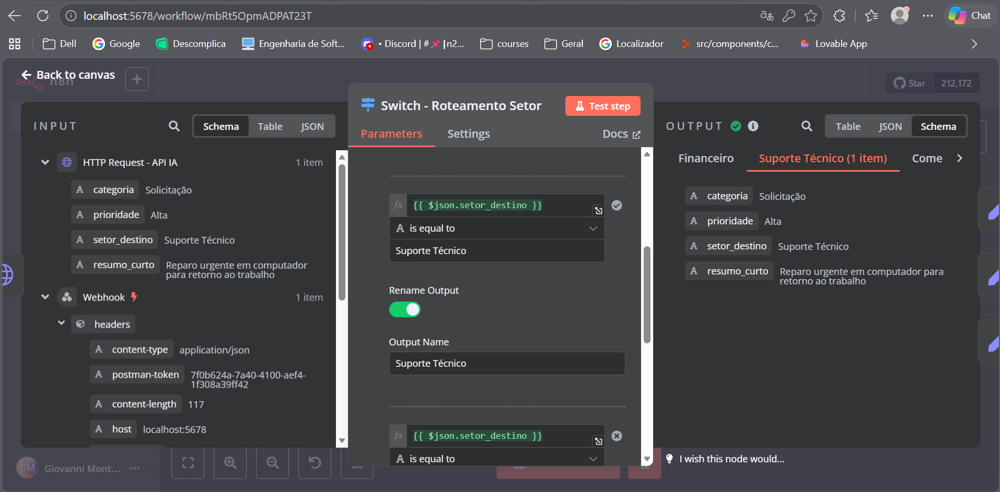
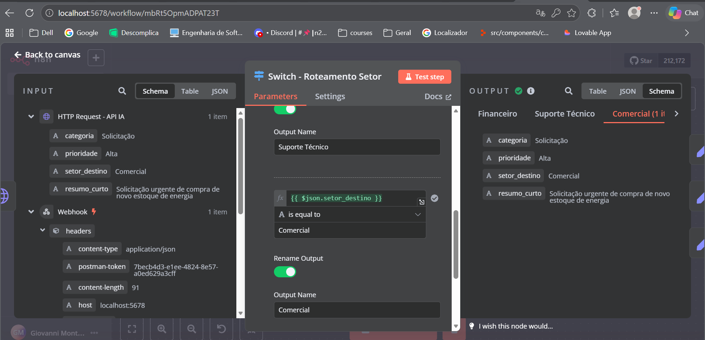
Cada saída do Switch conecta ao node Set do respectivo setor. O Set mantém os campos recebidos (includeOtherFields: true) e adiciona status_encaminhamento, por exemplo:
Encaminhado para fila do setor: Financeiro (Prioridade: Alta)
Esse campo registra o resultado do roteamento; os nodes Set não integram com um sistema de filas externo. A saída final do ramo contém os dados da classificação e o novo status, por exemplo:
{
"categoria": "Reclamação",
"prioridade": "Alta",
"setor_destino": "Financeiro",
"resumo_curto": "Fatura com cobrança indevida solicitando estorno urgente",
"status_encaminhamento": "Encaminhado para fila do setor: Financeiro (Prioridade: Alta)"
}
Os campos de classificação variam conforme a mensagem recebida. O resultado da execução pode ser conferido na saída do node Set executado:
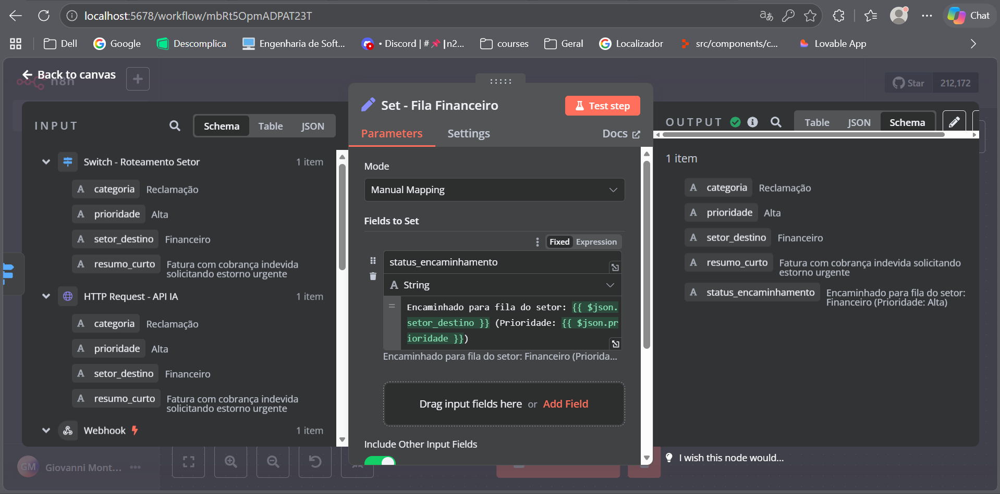
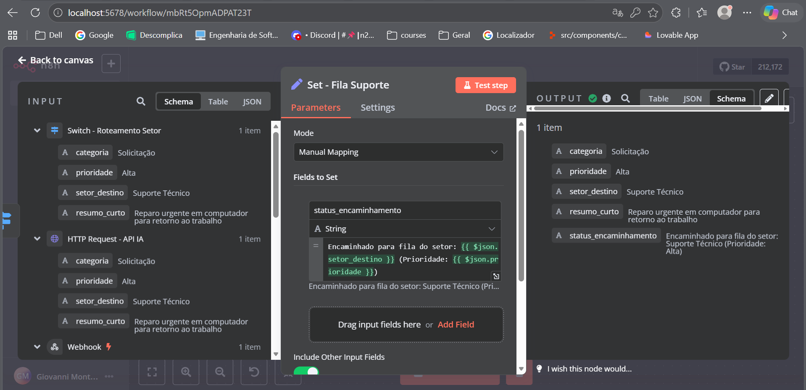
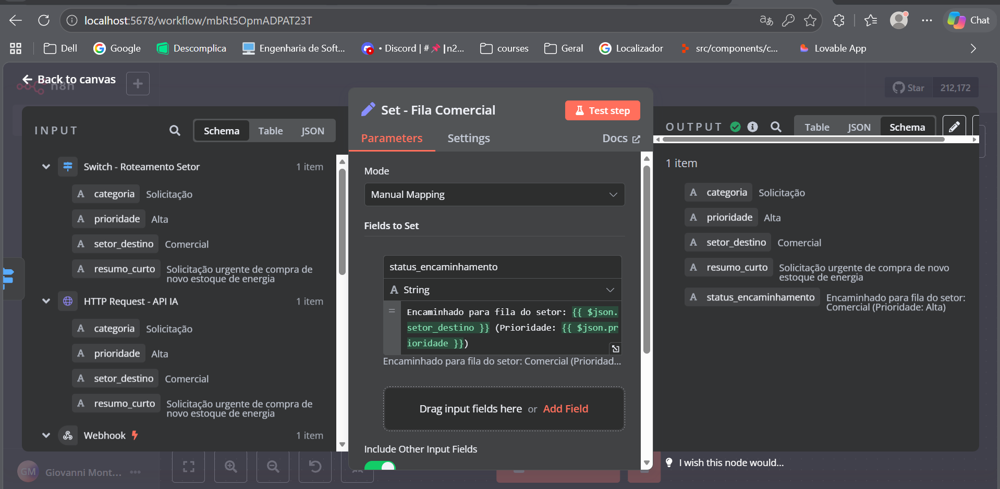
No workflow atual, o Webhook usa a resposta padrão do n8n, que confirma o recebimento sem aguardar a conclusão dos nodes seguintes. Por isso, o Postman recebe uma confirmação HTTP — na captura, 200 OK com {"message":"Workflow was started"} — e não o JSON final da classificação. O resultado final fica disponível nos dados da execução no n8n. Para devolver esse resultado ao cliente HTTP, o workflow precisa ser configurado para responder após os nodes finais, por exemplo, com um node Respond to Webhook.
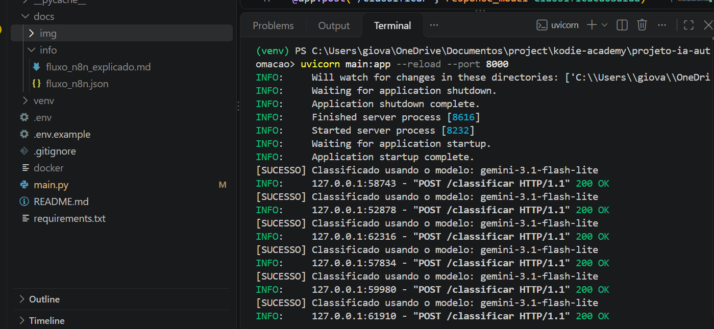
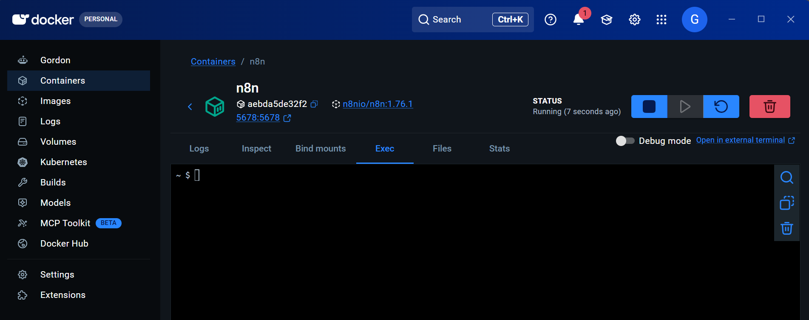
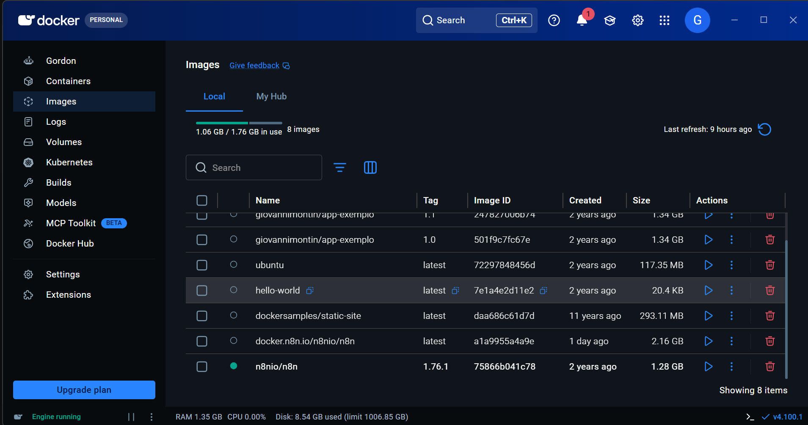
GEMINI_API_KEY)Clone o repositório e acesse a pasta do projeto:
bash
git clone https://github.com/GiovanniMontinOFC/classificador-mensagens-ia-automacao
cd /classificador-mensagens-ia-automacao
Crie e ative o ambiente virtual Python:
bash
python -m venv venv
# No Windows:
venv\Scripts\activate
# No Linux/Mac:
source venv/bin/activate
Instale as dependências da API:
bash
pip install -r requirements.txt
Configure as variáveis de ambiente:
* Copie o arquivo .env.example para um novo arquivo chamado .env:
bash
cp .env.example .env
* Abra o arquivo .env e insira sua chave da API do Gemini:
env
GEMINI_API_KEY=sua_chave_api_aqui
* Para ter sua chave de api, cadastre-se gratuitamente no site da ia do gemini, procure por Get API Key e comece sua jornada!
- Site: https://aistudio.google.com/
Inicie o servidor da API FastAPI:
bash
uvicorn main:app --reload --port 8000
A API ficará disponível em http://localhost:8000 (documentação interativa em http://localhost:8000/docs).
Inicie o n8n e importe o fluxo:
* Em um segundo terminal, execute:
bash
npx n8n
* Acesse http://localhost:5678 no navegador, crie um novo workflow, clique no menu ... > Import from File... e selecione o arquivo fluxo_n8n.json localizado na raiz deste repositório.
Teste a integração:
* Clique em Test Workflow no n8n e envie uma requisição POST para http://localhost:5678/webhook-test/atendimento com o seguinte corpo JSON:
json
{
"cliente": "João Silva",
"mensagem": "Minha fatura veio cobrando o dobro esse mês, preciso de estorno urgente!"
}